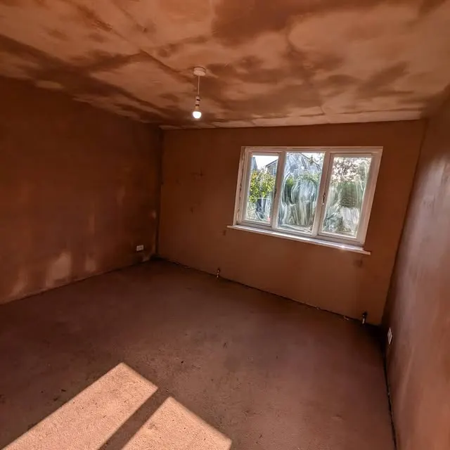
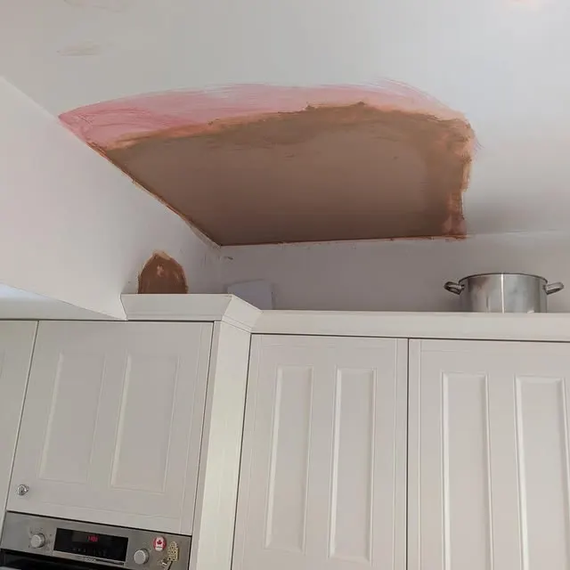
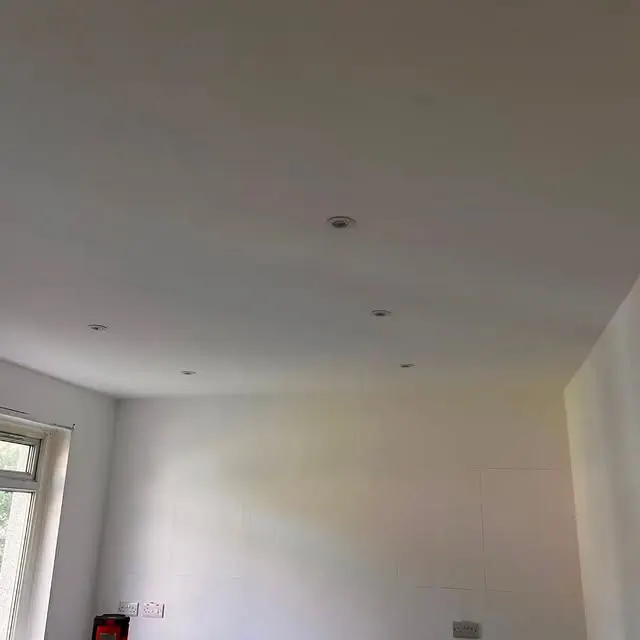
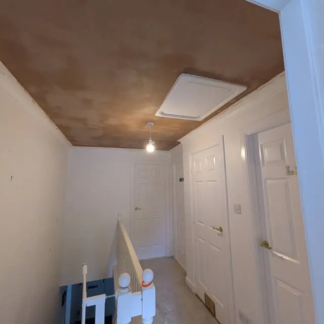
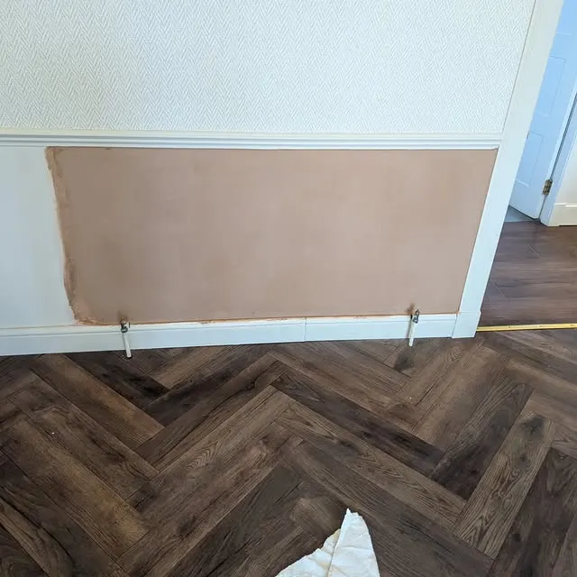

Glasgow & surrounding areas
Smooth walls, tidy finish, no job too small.
HR Plastering is a Glasgow plastering service built on a simple promise from its own bio: clean, tidy, professional service.
From a small patch after a leak to a full kitchen revamp, the work below is all real HR Plastering work.

What we do
Room skims
Bedrooms and living spaces skimmed to a smooth, paint-ready finish.
Ceiling overboard & skim
Ceilings overboarded and skimmed, as shown in recent bedroom work.
Patch repairs
Small patch jobs — including repairs after a leak — done neatly.
Kitchen revamps
Plastering as part of kitchen refreshes, finished clean and tidy.
Recent work
Photos from our own Instagram — real jobs, not stock photos.




Get a quote
Call or WhatsApp 07878052637, or email hrplastering@mail.com — both published in the business bio. Or message HR Plastering on Instagram @hrplastering2.